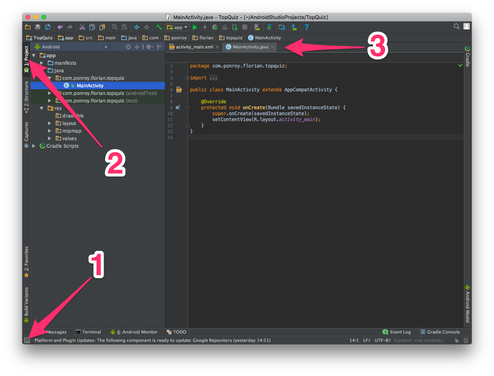
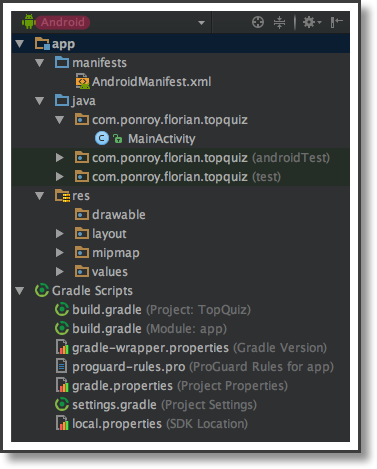
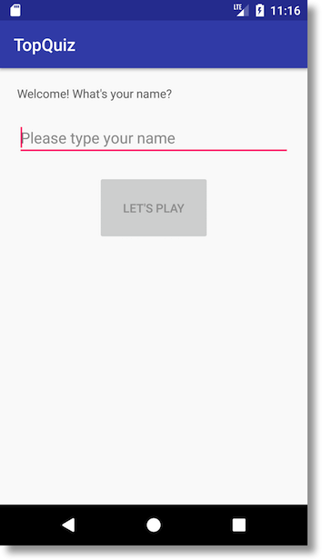

1. Installez android studio
Un environnement de développement est un logiciel, ou un ensemble de logiciels, vous permettant de développer des applications pour une plate-forme donnée. Par exemple, si vous souhaitez développer un programme Windows, vous utiliserez Visual Studio. Si vous souhaitez développer une application mobile iOS, vous utiliserez Xcode. En l'occurrence, pour développer une application mobile Android, vous allez installer Android Studio. L'IDE officiel supporté par Google pour développer sous Android est Android Studio. Pour l'installer, rien de plus simple : rendez-vous sur la page de telechargement d'android studio. Lorsque le téléchargement démarre, vous allez être automatiquement redirigés vers la page d'installation. Suivez les instructions correspondant à votre système d'exploitation en le sélectionnant dans le menu situé à droite de la page.. Avant de commencer, nous allons paramétrer légèrement l'IDE selon vos goûts. Pour ce faire, cliquez en bas sur Configure puis sur Preferences. N'oubliez pas de cliquer sur le bouton Apply en bas de la fenêtre pour appliquer les modifications. Thème Pour configurer le thème principal, rendez-vous dans Appearance & Behavior > Appearance > UI Options > Theme. Vous aurez le choix entre le thème par défaut, d'apparence clair, et le thème Darcula, d'apparence sombre. Si vous voulez passer pour un vrai pro, choisissez le thème Darcula. Si vous voulez avoir l'air d'un développeur des années 80, restez avec le thème standard. Lorsque vous créez un nouveau fichier dans votre projet, un en-tête est automatiquement ajouté avec les paramètres suivants :/*** Created by < VOTRE-NOM > on < DATE-DU-JOUR > */
2.Créez le projet et prenez en main l'environnement
Après avoir lancé Android Studio, cliquez sur Start a new Android Studio project.
*Configuration du projet :
Dans le champ Application name, vous allez saisir le nom de l'application. Par défaut, ce sera le nom qui apparaîtra en dessous de l'icône de l'application sur l'écran d'accueil du téléphone, et dans la barre de titre de l'application. Il vous sera tout à fait possible de le modifier par la suite. SaisissezTopQuiz (ou tout autre nom que vous trouvez mieux). Le champ Company domain permet de déterminer quel nom de paquetage utiliser pour votre application. Cela permet par la suite de distinguer votre application d'une autre application qui porterait le même nom. Par convention, la notation inverse est utilisée.Évitez simplement d'utiliser un nom de domaine qui ne vous appartient pas, afin de ne pas être confronté-e à un doublon le jour où vous souhaitez publier votre application sur le Google Play Store.. Laissez la case Include C++ support décochée, modifiez éventuellement le chemin du projet dans Project location puis appuyez sur Next.. Pour l'instant, seuls les téléphones et tablettes nous intéressent, vous allez donc laisser la première case cochée et ne pas cocher les autres. Vous devez également préciser la version minimale de SDK à utiliser pour votre projet, dans le champ Minimum SDK. utiliser une API élevée (donc récente) vous permet de bénéficier des dernières fonctionnalités proposées par Android. Vous verrez apparaître l'écran suivant : Ce graphique vous permet d'un coup d'œil de vérifier le pourcentage d'appareils qui seront capables d'installer et de lancer votre application. Plus vous vous rapprochez des 100%, mieux c'est, mais au détriment de fonctionnalités récentes. A ce jour, en choisissant l'API 15 : Android 4.0.3 (IceCreamSandwich), Android Studio précise que l'application sera en mesure de fonctionner sur 100% des appareils. Parfait ! Cliquez sur Next. Une nouvelle fenêtre s'affiche, vous indiquant que les composants nécessaires à votre projet sont installés. Cliquez de nouveau sur Next.* Choix de l'activité principale
Une activité (ou Activity en anglais) est une brique fondamentale dans l'interaction avec l'utilisateur. C'est elle qui va contenir l'ensemble des éléments graphiques du type champ texte, bouton, titre, etc. Dans notre cas, nous allons choisir une activité "vide", en sélectionnant Empty Activity.
*Configuration de l'activité principale
Par défaut, le nom de l'activité proposée est MainActivity. Il est parfaitement trouvé, car ce sera notre activité principale. Nul besoin de le modifier. La case Generate Layout File permet de déterminer si un fichier de "mise en page" doit être généré pour l'activité. Ce fichier de "mise en page", couramment appelé fichier layout, permet de déterminer quels sont les éléments graphiques à afficher. Nous verrons plus en détail ses caractéristiques dans le prochain chapitre. Pour le moment, laissez la case cochée.Le champ Layout Name permet de nommer le fichier layout. Par convention, s'il est lié à une activité, son nom commence toujours par activity, suivi du nom de l'activité. Dans notre cas, le nom proposé par défaut nous convient parfaitement. Laissez la case Backwards Compatibility (AppCompat) cochée. Nous verrons un peu plus tard de quoi il s'agit. Cliquez sur le bouton Finish. Une fenêtre intitulée Building 'TopQuiz' Gradle project info s'affiche, avec une barre de chargement. Patientez encore un peu, le temps que les fichiers nécessaires au bon fonctionnement de votre projet soient téléchargés, puis vous verrez apparaître l'écran principal d'Android Studio !
Découverte d'Android Studio : L'écran principal
D'une façon tout à fait classique, vous avez sur le côté gauche l'arborescence des fichiers, et sur la droite le contenu du fichier en cours d'édition. Vous constaterez qu'en plus des traditionnels boutons en haut de l'écran, plusieurs boutons ornent les bords de la fenêtre principale : quatre sur le bord gauche, six sur le bord du bas et deux sur le bord de droite. Eh oui, c'est une fonctionnalité assez originale d'Android Studio ! Pour l'instant, le bouton qui vous intéresse est le bouton n°2 (voir capture d'écran ci-dessus) : il permet d'afficher l'arborescence des fichiers du projet. Ensuite, chaque fichier ouvert s'affiche dans un onglet (label n°3 sur la capture d'écran). Soyez curieux et amusez-vous à cliquer sur chaque bouton présent sur les bords pour faire apparaître le contenu. Si vous cliquez de nouveau dessus, la fenêtre sera de nouveau cachée. Si vous ne voyez plus aucun bouton sur les bords, ne paniquez pas. Nul besoin d'appeler le 112 non plus. Il vous suffit simplement de cliquer sur le petit carré en bas à gauche de la fenêtre (bouton n°1 sur la capture d'écran ci-dessus).
* L'arborescence de fichiers
L'affichage des fichiers de votre projet doit ressembler à celui-ci : Vous avez la possibilité d'afficher différentes "vues". Une vue correspond à un affichage pré-déterminé d'informations spécifiques. amusez-vous à afficher les différentes vues pour vous familiariser avec l'IDE. Les trois répertoires principaux d'Android sont manifests, java et res. Explorons leur contenu.
*Le répertoire Manifest
Ce répertoire contient généralement un seul fichier : le fichier AndroidManifest.xml. Ce fichier est la carte d'identité de votre application. Il permet entre autres de préciser le nom de l'application, l'icône à utiliser, quelle activité lancer au démarrage, etc.
*Le répertoire java
Ce répertoire contient l'ensemble du code source Java ou Kotlin de l'application, ainsi que les différents tests associés. Dans notre exemple, nous voyons apparaître le fichier MainActivity (l'extension .java est automatiquement masquée par l'IDE). Au fur et à mesure de l'avancement du projet, ce répertoire se remplira de fichier, voire de sous-dossiers afin d'isoler les composants fonctionnels entre eux. !! Hey professeur, je comprends pas là. C'est quoi Kotlin ? Attention, accrochez-vous : Java n'est plus le seul langage de développement disponible pour développer des applications Android. Google a récemment annoncé que le langage Kotlin était désormais officiellement supporté. Si vous êtes curieux, n'hésitez pas à aller voir par ici.
*Le répertoire res
Ce répertoire contient toutes les ressources de l'application, et comprend quatre sous-répertoires : Le dossier drawable, qui contient l'ensemble des images et contenus à afficher à l'écran (par exemple une image de bouton ou un logo) ; Le dossier layout, qui contient l'ensemble des fichiers layout de votre application ; Le dossier mipmap, qui contient principalement l'icône de l'application ; Le dossier values, qui contient différents paramétrages et valeurs, par exemple les couleurs à utiliser dans l'application, les différentes traductions à utiliser ou les styles graphiques à appliquer. Voilà, vous en savez assez pour commencer. Ah si, dernière petite astuce : Pour fermer rapidement un fichier, au lieu de cliquer sur la petite croix de l'onglet correspondant, maintenez la touche shift de votre clavier enfoncée et cliquez sur l'onglet !3. Dessinez l'interface utilisateur de votre première activité
Dans cette partie , nous allons dessiner l'interfaçe utilisateur (premier écran) Dans ce premier écran, nous souhaitons accueillir l'utilisateur en lui demandant de saisir son prénom. De fait, cet écran va être composé d'un champ texte, d'une zone de saisie et d'un bouton. Le résultat attendu est le suivant . 
activity et layout
Une activité a pour rôle principal d'interagir avec l'utilisateur. C'est une classe Java ou Kotlin, qui hérite obligatoirement de la classe Android Activity ou AppCompatActivity. Pour interagir avec l'utilisateur, il faut lui présenter des éléments graphiques etdes éléments de contrôle ou widgets Afin de déterminer quels éléments graphiques utiliser et comment les positionner à l'écran, nous utilisons un fichier layout. Un fichier layout est un fichier XML que l'activité va charger après avoir été instanciée. Ce fichier XML est toujours stocké dans le répertoire res/layout de votre projet. Par convention, s'il est lié à une activité, il est toujours préfixé par activity, suivi du nom de l'activité, le tout en minuscule et séparé par un underscore (_). Ainsi, le fichier layout associé à MainActivity est activity_main.xml.Construction de l'interfaçe
Sous Android Studio, naviguez dans l'arborescence du projet et ouvrez le fichier activity_main.xml situé dans res/layout en double-cliquant dessus. Par défaut, Android Studio ouvre l'éditeur en mode Design, c'est à dire que vous pouvez placer et configurer les différents éléments graphiques avec votre souris et générer automatiquement le contenu XML. nous allons plutôt utiliser le mode Text, permettant d'avoir une meilleure maîtrise de l'ensemble. Pour ce faire, cliquer sur l'onglet Text en bas de l'écran, et vous verrez apparaître le contenu XML. Le contenu par défaut peut varier suivant les versions d'Android Studio, mais vous devez avoir quelque chose qui ressemble peu ou prou à cela : Pour voir le résultat en temps-réel, cliquez sur le bouton Preview situé sur le bord droit de la fenêtre. Vous verrez automatiquement apparaître le rendu du contenu XML, c'est à dire un écran avec le texte Hello World!.
Pour voir le résultat en temps-réel, cliquez sur le bouton Preview situé sur le bord droit de la fenêtre. Vous verrez automatiquement apparaître le rendu du contenu XML, c'est à dire un écran avec le texte Hello World!.
les conteneurs
Afin de pouvoir afficher des éléments à l'écran, il est impératif d'utiliser un conteneur. Un conteneur est un élément particulier permettant d'organiser les éléments qu'il contient entre eux. Dans le fichier XML de notre projet, le premier élément XML que nous voyons est du type android.support.constraint.ConstraintLayout. Cet élément est un conteneur. Android suffixe toujours le nom des conteneurs par Layout. Dans cet exemple, le conteneur contient un élément TextView, utilisé pour afficher le texte Hello World!. Parmi les conteneurs proposés par Android Remplacez la balise XML android.support.constraint.ConstraintLayout par LinearLayout, puis supprimez tout ce qui se rattache au tag app. Vous devez obtenir le résultat suivant :
les Attributs
Occupation de l'espace
Chaque balise XML possède plusieurs attributs. A minima, les deux attributs fondamentaux sont layout_width et layout_height. Ils permettent de déterminer comment afficher un élément au sein de son conteneur. Les deux valeurs possibles sont : match_parent : l'élément doit s'étendre le plus possible afin d'occuper le maximum d'espace disponible offert par son parent (vous pourriez voir apparaître de temps en temps fill_parent au détour d'un tutorial ou d'un site web : c'est un attribut obsolète, ancêtre de match_parent) ; wrap_content : l'élément doit s'étendre le moins d'espace possible et n'occuper que la place nécessaire à l'affichage de son contenu.Gravitation
La notion de gravitation peut s'appliquer à un élément ou à son contenu. Elle permet de déterminer comment positionner un élément par rapport à son conteneur, ou comment positionner le contenu d'un élément, par exemple le titre d'un bouton. Pour définir le positionnement d'un élément, c'est l'attribut android:layout_gravity qu'il faut utiliser. Les valeurs possibles sont nombreuses : left, right, center, center_vertical, center_horizontal, etc. Pour définir le positionnement d'un titre au sein d'un bouton ou d'un champ texte par exemple, c'est l'attribut android:gravity qu'il faut utiliser. Les valeurs possibles sont identiques à l'attribut layout_gravity.Texte :
Nous allons remplacer le texte de l'élément TextView afin d'accueillir convenablement l'utilisateur. Il vous suffit pour cela de remplacer la valeur de l'élément android:text, par exemple : "Bienvenue dans TopQuiz. Quel est votre prénom ?". Le texte dans le rendu de la zone Preview doit automatiquement se mettre à jour.Marge :
Vous constatez que le texte de l'élément TextView est collé en haut à gauche de son conteneur, ce qui n'est pas l'idéal. Pour le décoller légèrement du bord, il est nécessaire d'ajouter l'attribut android:layout_margin, permettant de préciser une grandeur de marge . La valeur se mesure en dp, pour Density-independent pixels. Par exemple, en précisant une valeur de 10dp, vous verrez l'élément s'éloigner des bords. Si vous ne souhaitez modifier qu'une seule marge, vous pouvez utiliser les versions suffixées suivantes : layout_marginTop, layout_marginBottom, layout_marginStart ou layout_marginEnd.Rembourrage :
Le rembourrage, ou padding en anglais, consiste à ajouter de l'espace entre le contenu d'un élément et les bords de cet élément. En ajoutant une marge et du rembourrage à l'élément TextView de votre projet, vous devez obtenir le résultat suivant (seul l'élément TextView est présenté) :
les Attributs
Zone de saisie :
Pour que l'utilisateur puisse taper son prénom, il faut lui présenter un élément lui permettant de saisir du texte. Sous Android, c'est l'élément EditText qui porte ce rôle. Pour ce faire, toujours dans le fichier activity_main.xml, ajoutez un élément EditText. Par défaut, ce positionnement s'effectue horizontalement. Pour changer ce comportement, il vous suffit d'ajouter l'attribut orientation à l'élément LinearLayout, avec la valeur "vertical" (de la même façon, vous pouvez simplement saisir les premières lettres et Android Studio se chargera de compléter l'ensemble pour vous). Tout comme le champ texte, nous pouvons ajouter une marge afin d'éviter que la zone de saisie ne soit trop proche des bords, par exemple à gauche et à droite. Il est également possible d'ajouter un indice à l'aide de l'attribut android:hint. Cet indice apparaît dans le champ texte pour apporter une information à l'utilisateur, puis disparait dès qu'il commence à saisir du texte.Vous devez obtenir le résultat suivant (seul l'élément EditText est présenté) :
Bouton :
Maintenant que l'utilisateur s'est présenté, il n'a plus qu'à appuyer sur un bouton pour commencer à jouer ,Comme pour l'élément TextView, l'attribut à utiliser pour spécifier le titre est android:text. Nous décidons de nommer le bouton "Let's play". Vous pouvez modifier la marge ou le rembourrage pour positionner le bouton comme bon vous semble. Pour ma part, j'ai décidé de le centrer horizontalement, et d'ajouter un peu de rembourrage pour qu'il paraisse plus important. Voici le résultat :
4. Référencez les éléments graphiques dans votre activité
Dans cette partie, nous allons voir comment référencer les éléments graphiques dans l'activité. Référencer les éléments graphiques dans le code est une étape indispensable pour pouvoir implémenter la logique métier de notre application, pouvoir modifier leur propriétés ou réagir à leurs changements.L'interface graphique est prête, il est temps maintenant de se pencher sur le code Java de l'activité. Ouvrez le fichier MainActivity situé dans le répertoire java/nom.de.votre.paquetage.
Affichage de l'interfaçe :
La classe MainActivity a été créée automatiquement par Android Studio lors de la création du projet, lorsque nous avons choisi le modèle Empty Activity La méthode onCreate() est appelée lorsque l'activité est créée (nous verrons plus en détail le cycle de vie d'une activité à la fin de ce cours). La ligne qui nous intéresse ici est la ligne n°4 : la méthode setContentView() permet de déterminer quel fichier layout utiliser. Le fichier layout à utiliser est précisé avec une syntaxe particulière : R.layout.nom_du_fichier (sans l'extension XML). Petite explication : lors de la compilation du projet, Android Studio génère une classe Java appelée R (pour Resources), qui contient l'ensemble des identifiants de toutes les ressources du projet. Ces ressources peuvent être des fichiers layout, des chaînes de caractères, etc. Nous verrons à quoi ressemble cette classe après avoir compilé le projet.Référencement des éléments graphiques
Déclaration des variables
Pour rappel, nous avons trois éléments graphiques dans notre interface : Le texte d'accueil ; Le champ de saisie du prénom ; Le bouton de validation. Afin de pouvoir interagir avec ces éléments, il est nécessaire de les référencer dans le code. Commençons par ajouter dans la classe MainActivity les trois variables correspondantes :Gravitation
La notion de gravitation peut s'appliquer à un élément ou à son contenu. Elle permet de déterminer comment positionner un élément par rapport à son conteneur, ou comment positionner le contenu d'un élément, par exemple le titre d'un bouton. Lorsque vous commencerez à saisir un type (par exemple TextView), vous constaterez qu'il apparaitra en rouge. Pourquoi ? Parce que ce type est inconnu : il faut importer la classe où ce type est défini. Par exemple, pour le type TextView, il faut importer la classe TextView située dans le paquetage android.widget en saisissant la ligne suivante en haut du fichier :
import android.widget.TextView;
Heureusement, Android Studio est là pour vous prêter main forte : dès qu'il détecte la saisie d'un type inconnu (il faut toujours se méfier des types inconnus, mes parents me l'ont toujours dit), il vous propose d'importer automatiquement la classe correspondante en appuyant sur ALT + Entrée. Ainsi, le type devient connu et vos parents sont rassurés.
Lorsque vous commencerez à saisir un type (par exemple TextView), vous constaterez qu'il apparaitra en rouge. Pourquoi ? Parce que ce type est inconnu : il faut importer la classe où ce type est défini. Par exemple, pour le type TextView, il faut importer la classe TextView située dans le paquetage android.widget en saisissant la ligne suivante en haut du fichier :
import android.widget.TextView;
Heureusement, Android Studio est là pour vous prêter main forte : dès qu'il détecte la saisie d'un type inconnu (il faut toujours se méfier des types inconnus, mes parents me l'ont toujours dit), il vous propose d'importer automatiquement la classe correspondante en appuyant sur ALT + Entrée. Ainsi, le type devient connu et vos parents sont rassurés.
Identification des éléments graphiques
Il manque néanmoins une petite chose dans le fichier layout : imaginez que vous ayez cinq éléments TextView les uns à la suite des autres. Comment les distinguer ? En leur ajoutant un identifiant bien sûr ! Pour cela, l'attribut à utiliser est android:id, et sa valeur doit être "@+id/votre_identifiant". Notez bien que l'identifiant doit toujours être préfixé par "@+id/". Par exemple :
Branchement des variables
Voilà, nous pouvons maintenant référencer les trois éléments graphiques qui nous intéressent dans le code. La méthode à utiliser pour cela est findViewById(). Elle prend en paramètre l'identifiant de la vue qui nous intéresse, et renvoie la vue correspondante. Comme pour le fichier layout, la syntaxe à utiliser pour le paramètre est spécifique : il faut préciser R.id.identifiant_de_vue. Notez également que le type renvoyé par la méthode findViewById() est View. Il faut donc effectuer une conversion vers le bon type (ou cast en anglais). Voici l'exemple de code que vous pouvez ajouter dans la méthode onCreate() :
6. Lancez l'application sur l'émulateur ou sur un équipement réel
Cette partie vous présente comment lancer votre application. Vous avez le choix : soit sur un émulateur si vous ne possédez pas d'Android, soit sur votre téléphone (ou tablette) si vous en possédez un (ou une). Utiliser l'émulateur offre l'avantage de générer facilement différentes configurations, avec des tailles d'écran différentes, une mémoire vive limitée ou une ancienne version d'Android par exemple. Après, rien ne vaut un test sur un équipement réel, afin de s'assurer que l'expérience utilisateur est la meilleure possible.